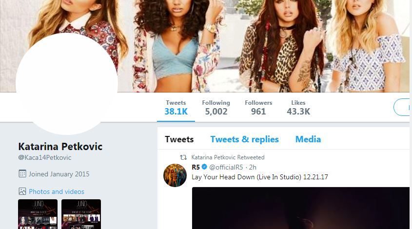

@SahibCantSingh & Spreadsheet that Went Viral
Posted on Thu 21 December 2017 in Python
Recently, my good friend and aspiring comedian Sahib went viral. It started on Twitter, spread to Instagram, and he even made the front page of Reddit a few times.
It all started when his sister begged the Twitterverse to urge Sahib to delete his Instagram account.
Can someone confiscate my brother's Instagram pic.twitter.com/Ehxh8oQLPz
— sunmeet kaur (@meetdasun) November 25, 2017
Often accompanied by an expressionless selfie, Sahib embeds subtle, scathing critiques of society, materialism, and the humble-brag culture that plagues social media. If one thing's unanimous, though, it's that his commentary is comedic gold.
In one picture where Sahib is positioned in front of an Excel spreadsheet, he scolds a select few of his 300-and-some-odd followers for not liking his pictures. Those with three infractions have been highlighted and red and can expect to receive an "in person consultation." The now infamous spreadsheet post has been removed, restored, and removed again by Instagram - a move that has seriously agitated the funny man's fan base.
Sahib has a lot more followers now, and I would be a horrible friend if I didn't help keep tabs on them.
Thankfully, Python makes this pretty easy.
Twitter API
Working with Twitter's API is incredibly simple for anyone who knows the basics of Python. After grabbing a free API key from their site, run the script below to grab data on a given user's followers.
(Note: I use the Tweepy library to access Twitter's API. In my experience, it's by far the easiest library for working with Twitter).
import json
import time
import tweepy
consumer_key = ''
consumer_secret = ''
access_token = ''
access_token_secret = ''
screen_name = 'SahibCantSingh'
auth = tweepy.OAuthHandler(consumer_key, consumer_secret)
auth.set_access_token(access_token, access_token_secret)
api = tweepy.API(auth)
followers = tweepy.Cursor(api.followers,
screen_name=screen_name,
count=200).items()
while True:
try:
follower = next(followers)
json_data = follower._json
with open('sahibs_followers.json', 'a+') as outfile:
json.dump(json_data, outfile)
outfile.write('\n')
except tweepy.error.RateLimitError:
time.sleep(60)
except StopIteration:
break
Twitter imposes some pretty frustrating rate limiting, only allowing authenticated users to make a certain amount of requests within sliding 15 minute windows.
The first time around, I used time.sleep(60*15) to wait 15 minutes when I was rate limited, but my connection would be lost entirely after ten minutes or so. To avoid this, I opted to sleep for one minute and then attempt to get the next set of followers returned by the Cursor.
Obviously, if I already made the maxium amount of requests in the 15 minute window, the API call would fail 15 times. But communicating with the API kept the connection alive. It's a workaround, but it does the job (how many times has that been said before?).
The script writes each the JSON data for each follower to a new line in the sahibs_followers.json file, which will be convenient for subsequent analysis.
Taking a Look
We'll use pandas for the bulk of our analysis, with json and datetime to help us out a little along the way. Plotly is an interactive plotting library that let's you host visualizations in the cloud, and cufflinks binds plotly directly to pandas dataframes.
from datetime import datetime
import json
import cufflinks as cf
import pandas as pd
import plotly
plotly.tools.set_credentials_file(username='', api_key='')
with open('sahibs_followers.json', 'r') as f:
data = [json.loads(line) for line in f]
follower_dict = {'name': [user['name'] for user in data],
'screen_name': [user['screen_name'] for user in data],
'locations': [user['location'] for user in data],
'protected': [user['protected'] for user in data],
'followers_count': [user['followers_count'] for user in data],
'favorites_count': [user['favourites_count'] for user in data],
'time_zone': [user['time_zone'] for user in data],
'geo_enabled': [user['geo_enabled'] for user in data],
'language': [user['lang'] for user in data],
'created_at': [user['created_at'] for user in data],
'default_profile': [user['default_profile'] for user in data],
'default_profile_image': [user['default_profile_image'] for user in data]
}
df = pd.DataFrame(data=follower_dict)
df['created_at'] = pd.to_datetime(df['created_at'])
df['time_zone'] = df['time_zone'].str.replace('US & Canada','US')
After opening the JSON JSON file and reading it line by line (or rather, user by user), we use a few list comprehensions to create a dictionary that we'll use as the data for our dataframe. Lastly, we convert the created_at field from the Twitter API into a pandas compatible datetime format, and then shorten some time zone names to make our future graphs look cleaner.
Time Zones
Looking at the most common time zones of a user's followers can yield some interesting insights. You might not want to post your funniest content, for example, when everyone's assleep.
Below, we can grab the unique values in the time_zone column of the dataframe, sort them by frequency, and plot them.
time_zones = df['time_zone'].value_counts()[:20]
time_zones.iplot(kind='bar',
yTitle='Number of Users',
title='Top 20 Time Zones of @SahibCantSingh\'s Followers')

Languages
Language settings on Twitter can grant additional insight into follower demographics as well, and can serve as a loose substitute for geographic data (getting geo data is much easier when analyzing Tweets, as there's a coordinates field in the Tweet Object).
In Sahib's case, it's obvious (I peaked to make sure) that most followers will be English speakers. Let's have a look at the most common non-English languages.
The two letter language codes (ISO 639-1) can be referenced here.
lang_df = df[df['language'].str.contains('en') == False]
lang_df['language'].value_counts()
languages = lang_df['language'].value_counts()[:20]
languages.iplot(kind='bar',
yTitle='Number of Users',
title='Top 20 Languages of @SahibCantSingh\'s Followers')

We can also take a look at the behavior of users, grouped by their language. Below, we'll group the user's of non-English languages to see the average amount of likes a user in a certain language has.
lang_mean = lang_df.groupby('language')['favorites_count'].mean().sort_values(ascending=True)
lang_mean.iplot(kind='bar',
xTitle='Number of Likes',
title='Average # of Likes per Language')

Right away, we have an interesting find. Serbian (sr) wasn't in the top 20 non-English languages, but they have the highest average favorite count.
We can quickly look through the dataframe to find all users whose language is sr with the following line of code:
lang_df[lang_df['language'] == 'sr']
Out of the 15,000+ users we have in our dataframe, the criteria returns only one Twitter user with the screen name Kaca14Petkovic, who indeed has well over 40,000 likes.

We'll also look at the behavior of the English speaking audience. After a little cleaning ("en-gb" and "en-GB" were both present in the dataframe, but represent the same language), we group the English speaking users and plot their average number of likes on Twitter.
eng_df = df[df['language'].str.contains('en')]
eng_df['language'] = eng_df['language'].str.lower()
eng_mean = eng_df.groupby('language')['favorites_count'].mean().sort_values(ascending=True)
eng_mean.iplot(kind='barh',
xTitle='Number of Likes',
title='Average # of Likes per Language (English)')

en (which I assume is the United States' userbase) has greater average, with en-gb (10,523) and en-au (10,521) coming in behind at almost identical averages.
Bot or Not
Presently, there's a lot of talk about social media bots, especially given the foreign influence (via online disinformation campaigns) in the 2016 US presidential election. Geopolitics aside, automating social media accounds is a trivial pursuit, especially for Twitter.
Without delving into complex statisical models (of which I am certainly not familiar with) to estimate whether an account is real or not, the Twitter User object provides some useful fields in making a slightly less-scientific estimate.
Account Age
The created_at field gives us the timestamp of when a Twitter account was created. We can take the difference between a current timestamp (or rather, when I originally did the analysis) and the created_at field to get a user's account age, or how long an account has existed.
More on working with timedeltas can be found here.
df['created_at'] = pd.to_datetime(df['created_at'])
df["user_age"] = df["created_at"].apply(lambda x: (datetime.now() - x).total_seconds() / 3600 / 24 / 365)
df['user_age'].iplot(kind='histogram',
title='Account Age of @Sahibcantsingh\'s Followers',
xTitle='Twitter account age in years',
yTitle='# of Followers')

A quick glance at the histogram above shows that most of Sahib's Twitter followers have been on Twitter for 3.5-6.5 years. There are plenty of accounts that are younger than that, and many that are much older.
Calling the max() method on the user_age Series (dataframe column) shows the "oldest" follower has been on Twitter for over 11 years.
>>> df.user_age.max()
>>> 11.43
The account age distribution gives us additional confidence that the vast majority of accounts aren't automated bots.
Default Profiles & Images
For years, the hallmark of a Twitter Egg was a default profile and image. These features became so synonymous with bots and trolls that Twitter eventually changed the default egg profile picture to a human silhouette.
From Twitter's official blog in March 2017:
We’ve noticed patterns of behavior with accounts that are created only to harass others – often they don’t take the time to personalize their accounts. This has created an association between the default egg profile photo and negative behavior, which isn’t fair to people who are still new to Twitter and haven’t yet personalized their profile photo.
The boolean default_profile field in the Twitter User object indicates whether or not a user has altered the theme or background of their user profile.
Once we extract the default_profile values from our dataframe, we'll make a new dataframe consisting of the labels (True and False) and their count to visualize them in a pie chart.
pie_count = df['default_profile'].value_counts().tolist()
pie_label = df['default_profile'].value_counts().index.tolist()
pie_dict = {'labels': pie_label,
'values': pie_count}
pie_df = pd.DataFrame(data=pie_dict)
pie_df.iplot(kind='pie',
labels='labels',
values='values',
textposition='outside',
textinfo='value+percent',
title='@Sahibcantsingh\'s Followers - Default Profile')

Almost half of Sahib's followers have a default profile, but this isn't necessarily a valid indicator of whether an account is a bot or not. Personally, I'm pretty active on Twitter. My profile picture identifies me, and I've no undoubtedly shared other identifying information (e.g., I link to this blog in my Twitter bio). But I've never once considered altering the background of my profile, and I can reasonably assume that hundreds of thousands (or millions) of others haven't either, especially when one considered that Twitter is an idea-centric platform and not one focused on design.
The default_profile_image is another boolean field in the Twitter User object, that indicates whether or not a user has uploaded their own profile image.
On the surface, this appears to be a more valid indicator for real profiles. We'll construct a new dataframe just as we did for the previous field, and visualize once more with a pie chart.
Note: I know pie charts are heavily discouraged for effecitive visualizations (read: Save the Pies for Dessert), but they're fine when comparing two categories, like we are here. In fact, the significant difference in the size of the two slices below lets a reader quickly compare them and gain insight, which is a little more difficult in the first pie chart because of their similar slice sizes.
pie_count = df['default_profile_image'].value_counts().tolist()
pie_label = df['default_profile_image'].value_counts().index.tolist()
pie_dict = {'labels': pie_label,
'values': pie_count
}
pie_df = pd.DataFrame(data=pie_dict)
pie_df.head()
pie_df.iplot(kind='pie',
labels='labels',
values='values',
textposition='outside',
textinfo='value+percent',
title='@Sahibcantsingh\'s Followers - Default Profile Image')

Over 98% of Sahib's followers do not have a default picture - indicating they've somehow personalized their profile picture. What remains unknown though, is how many user-uploaded photos are of themselves.
Given this figure, coupled with the distribution of account ages, it appears Sahib's recent surge in Twitter followers was organic.